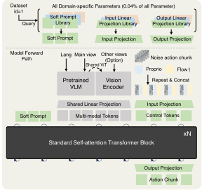

Successful generalist Vision-Language-Action (VLA) models rely on effective training across diverse robotic platforms with large-scale, cross-embodiment, heterogeneous datasets.
To facilitate and leverage the heterogeneity in rich, diverse robotic data sources, we propose a novel Soft Prompt approach with minimally added parameters,
by infusing prompt learning concepts into cross-embodiment robot learning and introducing separate sets of learnable embeddings for each distinct data source.
These embeddings serve as embodiment-specific prompts, which in unity empower VLA models with effective exploitation of varying cross-embodiment features.
Our new X-VLA, a neat flow-matching-based VLA architecture, relies exclusively on soft-prompted standard Transformer encoders, enjoying both scalability and simplicity.
Evaluated across 6 simulation environments as well as 3 real-world robots, our 0.9B instantiation-X-VLA-0.9B simultaneously achieves
state-of-the-art performance over a sweep of benchmark suites , demonstrating superior results on a wide axes of capabilities,
from flexible dexterity to quick adaptation across embodiments, environments, and tasks.
Outline of the X-VLA model.
Model Architecture
Our design introduces a streamlined encoding pipeline that integrates soft prompts and explicitly disentangles
high- and low-dimensional input streams. This architecture yields improved training stability and
consistently stronger validation performance.

Detailed architecture of our X-VLA model.
Experimental Results
Our design introduces a streamlined encoding pipeline that integrates soft prompts and explicitly disentangles high- and low-dimensional input streams. This architecture yields improved training stability and consistently stronger validation performance.
Comparison of specialize and generalize models on simulation benchmarks.
We also evaluate X-VLA-0.9B on physical robotic platforms follow the BridgeData-v2 benchmark. Our X-VLA surpass other baselines across all five tasks, each for testing distinct axis of capability, demonstrating the superior adaptability of our X-VLA.
We evaluate our X-VLA model on three distinct real-world embodiments, each under specific task setups, including simple manipulation, dexterous manipulation, and fast adaptation experiments using Parameter efficient finetuning (PEFT) techniques.
Soft-Fold: the First Open-Source High-Quality Cloth-Folding Dataset
We provide qualitative results about our finetuned dexterous manipulation model from the pretrained X-VLA-0.9B and introduce a high-quality cloth folding dataset: Soft-FOLD
Demonstration collecting strategy. Humans can fold clothes casually and quickly, often using a wide variety of methods in a seemingly random manner. However, this variability poses significant challenges for robotic policy learning, since different folding strategies often correspond to distinct behavioral modes, and not all strategies are equally suitable for training. To reduce the inconsistency in human demonstrations, we decompose the folding task into two stages: (1) smoothing out the cloth from a highly disordered state, and (2) folding the smoothed cloth neatly. We find that the first stage is particularly challenging, as the disordered cloth exhibits highly random dynamics, requiring the policy to capture a universal strategy for unfolding. To address this, we collect demonstrations for stage I in a repetitive manner until meaningful keypoints, such as the two corners or two ends of the cloth emerge clearly. At that point, we employ swinging motions to complete the smoothing stage and then transition to stage II. This is critical for cloth folding, as unstructured or randomly collected demonstrations in stage I can entangle policies in inconsistent behaviors, leading to unstable learning dynamics and hindering progression to stage II. For stage II, the data collection becomes far more easier, as the cloth behaves less randomly after smooth-out. On average, one full folding episode takes about 1.5 minutes, with one hour of collection yielding 20–25 episodes, including time for resetting and discarding failed attempts.
DAgger-style data collection. To train long-horizon dexterous tasks such as cloth folding with limited episodes, we find it essential to adopt a DAgger-style data collection strategy, a practice also noted by. Concretely, we train ACT after every 100 collected episodes, identify its failure modes, and then collect targeted demonstrations to address these failures. This iterative refinement enables us to achieve cloth-folding performance comparable to that of closed-source models that are likely trained on substantially larger datasets, using only 1,200 episodes.
Qualitative results of X-VLA-0.9B. Here, we visualize a complete folding progress of our X-VLA-0.9B in Fig.5. One complete folding covers diverse skills, such as the simple Localization, Pick, Place and high-dynamical Swing motion, demonstrating the challenging of the cloth-folding tasks.
Meticulous Model Design and Training Recipes
Building on Soft Prompts,
we introduce X-VLA, a neat VLA architecture designed for stable pretraining on heterogeneous datasets and efficient adaptation on new domains. In this section, we first present the overall architectural design, followed by several key techniques for large-scale pretraining.
See our paper for more details.
We evaluate the pretraining (PT) validation error and adaptation (AD) success rates on Simpler-WidowX benchmark. Green, Red and Gray denote positive, negative, moderate effects, respectively. Bold scores are SOTA results. We can see that naively training on heterogeneous data leads to degradation. Also, as validation error decreases during pretraining, the adaptation success rate increases progressively, demonstrating a strong correlation between the two. Therefore, we use the validation error as a proxy for pretraining performance throughout this paper. It is evident that each components in Section 4 contributes to positive improvements for pretraining.
Citation
@misc{zheng2025xvlasoftpromptedtransformerscalable,
title={X-VLA: Soft-Prompted Transformer as Scalable Cross-Embodiment Vision-Language-Action Model},
author={Jinliang Zheng and Jianxiong Li and Zhihao Wang and Dongxiu Liu and Xirui Kang and Yuchun Feng and Yinan Zheng and Jiayin Zou and Yilun Chen and Jia Zeng and Ya-Qin Zhang and Jiangmiao Pang and Jingjing Liu and Tai Wang and Xianyuan Zhan},
year={2025},
eprint={2510.10274},
archivePrefix={arXiv},
primaryClass={cs.RO},
url={https://arxiv.org/abs/2510.10274},
}
Acknowledgements
This work was supported by funding from the National Key R&D Program of China (2022ZD0160201),
Shanghai Artificial Intelligence Laboratory, Wuxi Research Institute of Applied Technologies, Tsinghua University (Grant No. 20242001120), Beijing Academy of Artificial Intelligence (BAAI),
Horizon Robotics, and AsiaInfo. We thank Wencong Zhang for the help on robot maintenance,
Yiming Meng for the help on surveying simulation benchmarks, and Yiming Chen for the help on real-world data
collection. The design of this website was inspired by the Flow Q-Learning project page.